RITANOL — COLORFUL STORY-RPG ASSETS
All artwork is shown at exactly 3× with nearest-neighbor browser scaling.
hero-scene.png — 320×240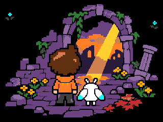
hero-idle-front.png — 24×32
hero-walk-front.png — 4 × 24×32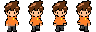
hero-walk-back.png — 4 × 24×32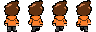
hero-walk-side.png — 4 × 24×32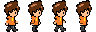
portrait-neutral.png — 48×48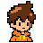
portrait-curious.png — 48×48
portrait-smile.png — 48×48
icon-soul-jump.png — 32×32
icon-super-fun-game.png — 32×32
icon-harness.png — 32×32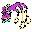
save-point.png — 3 × 32×32
enemy-gloamling.png — 40×40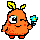
tile-ruin-floor.png — 32×32 seamless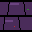
tile-ruin-wall.png — 32×32 seamless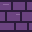
tile-ruin-pillar.png — 32×64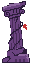
tile-flowers.png — 32×32 seamless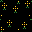
character-parade.png — 320×48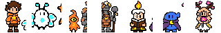
soul-hearts.png — 8 × 32×32
ui-atlas.png — 128×64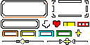
divider-echo-flowers.png — 320×32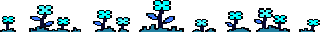
favicon.png — 32×32